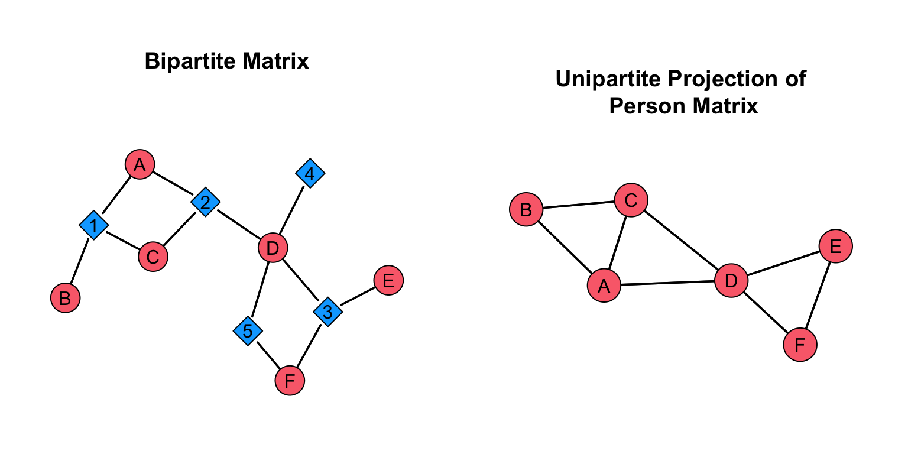
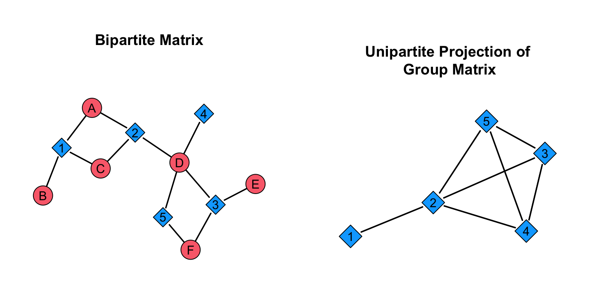
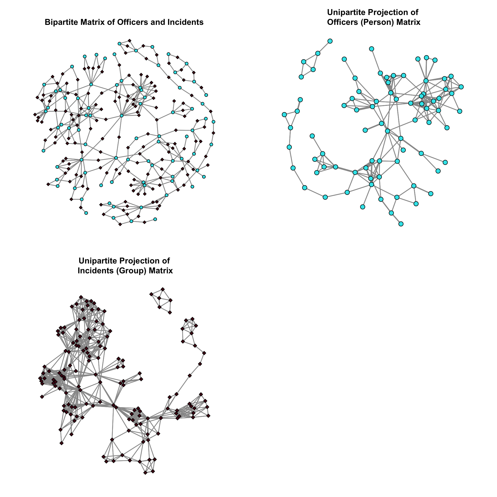
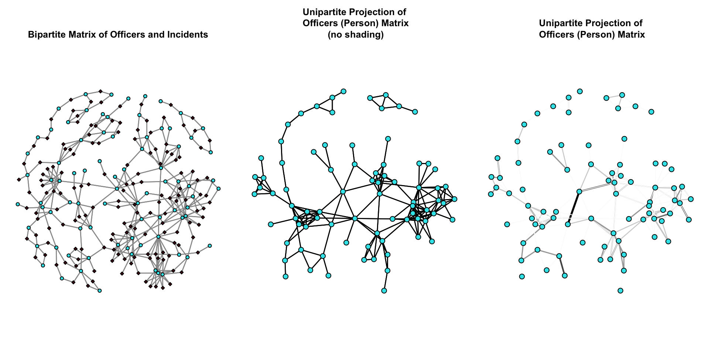
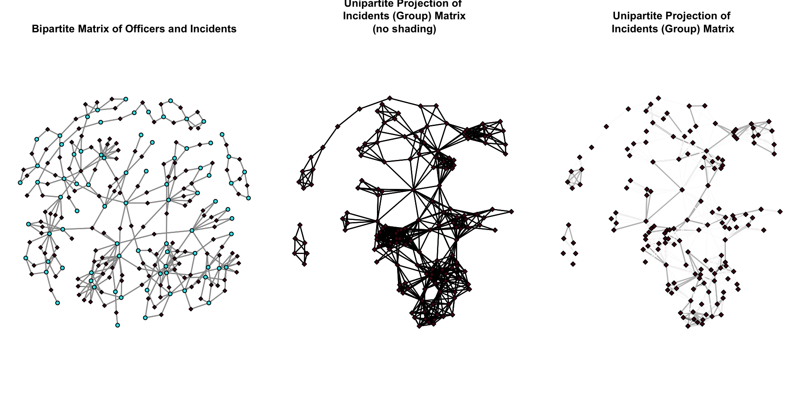

As discussed in the Bipartite Graphs & Two-Mode Networks chapter of the textbook, bipartite graphs are useful for operationalizing contexts where nodes come from two separate classes. In contrast to one-mode networks, or unipartite graphs, where edges can be incident within a particular node/vertex set, in two-mode or bipartite graphs there are two partitions of nodes (called modes), and edges only occur between these partitions (i.e. not within).
Then, in the Projection chapter, we saw that projection is the process by which we map the connectivity between modes to a single mode. And, we saw that we can use a weighted graph or a binarized graph in the analysis of the project.
In this tutorial, we will review how a unipartite or one-mode network can be created through projection.
One-Mode Networks by Projection
Following Breiger (1974), we can build the adjacency matrix for each projected network through matrix algebra. Specifically, multiplying an adjacency matrix by it’s transpose. The transpose of a matrix A simply reverses the columns and rows: \(\sf{A^T_{ij}}\) = \(\sf{A_{ji}}\).
The two-mode, NxM, adjacency matrix, when multiplied by it’s transpose, produces either:
An NxN matrix (ties among N nodes via M)
An MxM matrix (ties among M nodes via N)
To examine how this works, let’s first set up an example:
# create an example matrixA <-rbind(c( 1,1,0,0,0 ),c( 1,0,0,0,0 ),c( 1,1,0,0,0 ),c( 0,1,1,1,1 ),c( 0,0,1,0,0 ),c( 0,0,1,0,1 ) )# name the rows and columns rownames( A ) <-c( "A","B","C","D","E","F" )colnames( A ) <-c( "1","2","3","4","5" )# print out the matrixA
1 2 3 4 5
A 1 1 0 0 0
B 1 0 0 0 0
C 1 1 0 0 0
D 0 1 1 1 1
E 0 0 1 0 0
F 0 0 1 0 1
Transposition
In R, the t() function, or transpose() returns the transposition of a matrix. To see the the help on the transpose() function, just use ?t to pull up the help page.
# print the transpose of our examplet( A )
A B C D E F
1 1 1 1 0 0 0
2 1 0 1 1 0 0
3 0 0 0 1 1 1
4 0 0 0 1 0 0
5 0 0 0 1 0 1
What is different? Compare the difference between A and t( A ).
Matrix Multiplication in R
To create the project, we need to use matrix algebra. To multiply matrices in R, we have to use the following operator: %*%. This is different then * in that %*% tells R to use matrix multiplication. For example, compare the differences:
# create two matricesa <-matrix( c(1,1,1,1), nrow=2, byrow=TRUE )b <-matrix( c(2,2,2,2), nrow=2, byrow=TRUE )# multiply the first element in a by the first element in ba * b
[,1] [,2]
[1,] 2 2
[2,] 2 2
# multiply the matrix a by the matrix ba %*% b
[,1] [,2]
[1,] 4 4
[2,] 4 4
What is the difference? When we use a * b, it is not using matrix multiplication.
To multiply two matrices, the number of columns in the first matrix must match the number of rows in the second matrix. This is called conformability. Only matrices with conformable dimensions can be multiplied. For example, 5x6 X 6x5 works, but not 5x6 X 5x6. When two matrices are multiplied by each other, this renders the product matrix. The product matrix has the number of rows equal to the first matrix and the number of columns equal to the second matrix.
Recall that from the two-mode, NxM, adjacency matrix, we can produce two different matrices:
An NxN matrix (ties among N nodes via M)
This is created by using NxM X t(NxM), or NxM X MxN
An MxM matrix (ties among M nodes via N)
This is created by using t(NxM) X NxM, or MxN X NxM
Let’s create each of these with our example network.
# create the NxN matrixA %*%t( A )
A B C D E F
A 2 1 2 1 0 0
B 1 1 1 0 0 0
C 2 1 2 1 0 0
D 1 0 1 4 1 2
E 0 0 0 1 1 1
F 0 0 0 2 1 2
Ok, so we have created the projections, which are the one-mode networks that represent information in the two-mode networks. Recall from the Projection chapter that Breiger (1974) referred to the person matrix (i.e. the NxN matrix) and the group matrix (i.e. the MxM matrix).
# create the "person" matrix: recall this is A X t(A)P <- A %*%t( A )P
A B C D E F
A 2 1 2 1 0 0
B 1 1 1 0 0 0
C 2 1 2 1 0 0
D 1 0 1 4 1 2
E 0 0 0 1 1 1
F 0 0 0 2 1 2
What does the diagonal represent in this matrix? What do the off-diagonal elements represent?
The diagonal elements represent the number of nodes in the second mode of the bipartite graph to which a node is connected. Put differently, if we have a two-mode network where one set of nodes are individuals and the other set of nodes are events, then the diagonal of the projection for the “person” matrix represents the number of events that an individual attended.
The off-diagonal elements represent the ties between nodes in the same node set of the bipartite graph. That is, ties between individuals.
To visualize this by plotting each network, then we can better see what is happening. We will use the gplot() function, so be sure to call the sna package library.
# call the librarylibrary( sna )# set the plot regions to ease with visualizationpar( mfrow =c( 1, 2 ),mar =c( 0, 1, 4, 1) )# set the seed to reproduce the plotset.seed( 507 )# plot the bipartite networkgplot( A,gmode ="twomode",main =NA,usearrows =FALSE,label =c( "A","B","C","D","E","F", "1","2","3","4","5" ),label.pos =5,vertex.cex =2,vertex.col =c( # create a vector of colorsrep( "#fa6e7a", dim( A )[1] ), # the first color is the number of nodes in the first moderep( "#00aaff", dim( A )[2] ) ) # the second color is the number of nodes in the second mode )title( "Bipartite Matrix", line =1 )# plot the person matrixgplot( P,gmode ="graph",label =c( "A","B","C","D","E","F" ),main =NA,usearrows =FALSE,label.pos =5,vertex.cex =2,vertex.col ="#fa6e7a",vertex.sides =99.# set the shapes to be circles )title( "Unipartite Projection of\n Person Matrix", line =-1 )

From the plots we can see what the projection is doing. It is creating a unipartite graph based on the ties in the bipartite graph. For example, consider nodes A, B, and C. In the bipartite graph, B, is connected to A and C through node 1. We see this in the unipartite graph where A, B, and C are connected. In other words, we have taken the links between A, B, and C in the bipartite graph and reproduced them in a unipartite graph.
The Group Matrix
Now, let’s take a look at the “group” matrix. The projection for the “group” matrix has a different interpretation. Let’s work through this to see it.
# create the "group" matrix: recall this is t(A) X AG <-t( A ) %*% AG
What does the diagonal represent in this matrix? What do the off-diagonal elements represent?
The diagonal elements represent the number of nodes in the first mode of the bipartite graph to which a node is connected. If we have a two-mode network where one set of nodes are individuals and the other set of nodes are events, then the diagonal of the projection for the “group” matrix represents the number of individuals that attend an event. The off-diagonal elements represent the ties between events. Essentially, how events are connected by people attending them. Let’s plot this to see it.
# call the librarylibrary( sna )# set the plot regions to ease with visualizationpar( mfrow =c( 1, 2 ),mar =c( 0, 1, 4, 1) )# set the seed to reproduce the plotset.seed( 507 )# plot the bipartite networkgplot( A,gmode ="twomode",main =NA,usearrows =FALSE,label =c( "A","B","C","D","E","F", "1","2","3","4","5" ),label.pos =5,vertex.cex =2,vertex.col =c( rep( "#fa6e7a", dim( A )[1] ), rep( "#00aaff", dim( A )[2] ) ) )title( "Bipartite Matrix", line =1 )# plot the person matrixgplot( G,gmode ="graph",label =c( "1","2","3","4","5" ),main =NA,usearrows =FALSE,label.pos =5,vertex.cex =2,vertex.col ="#00aaff",vertex.sides =4# set the shape to be a square )title( "Unipartite Projection of\n Group Matrix", line =-1 )

From the plots we can see what the projection is doing. It is creating a unipartite graph based on the ties in the bipartite graph, but this time it is for the other node set. For example, consider nodes 1, 2, and 3. In the bipartite graph, 1, is connected to 2 through node A and C. Node 2 and 3 are connected through node D. We see this in the unipartite graph where 1 is connected to 2 and 2 is connected to 3. In other words, we have taken the links between 1, 2, and 3 in the bipartite graph and reproduced them in a unipartite graph.
Now, let’s work with a real example. As discussed in the Bipartite Graphs & Two-Mode Networks chapter, Young and Ready (2015) examined how police officers develop cognitive frames about the usefulness of body-worn cameras. They argued that police officers views of body-worn cameras influence whether they use their cameras in incidents and that these views partly result from sharing incidents with other officers where they exchanged views about the legitimacy of body-worn cameras.
Let’s import the the matrix, create a network, assign an attribute, and plot it. Then, we will work create the projection.
# set the location for the fileloc <-"https://github.com/jacobtnyoung/snaca-r/raw/main/data/data-officer-events-adj.csv"# read in the .csv filecam_mat <-as.matrix(read.csv( loc,as.is =TRUE,header =TRUE,row.names =1 ) )
We can check the dimensions of the matrix using the dim() function. The cam_mat matrix has 81 rows and 153 columns. Recall that this is police officers and incidents, so there are 81 police officers and 153 incidents that connect officers.
# identify the number of police officersN <-dim( cam_mat )[1]# identify the number of incidentsM <-dim( cam_mat )[2]
Create the Projections
Now that we have it put together, let’s create the projections. To do this, we just need to employ matrix multiplication on the cam_mat matrix.
# create the "person" matrixcam_mat_P <- cam_mat %*%t( cam_mat )# create the "group" matrixcam_mat_G <-t( cam_mat ) %*% cam_mat
Now, let’s plot the networks!
# set the plot regions to ease with visualizationpar( mfrow =c( 2, 2 ),mar =c( 2, 1, 4, 1) )# set the seed to reproduce the plotset.seed( 507 )# plot the bipartite networkgplot( cam_mat,gmode="twomode",usearrows=FALSE,edge.col="grey60",vertex.col =c( rep( "#34e5eb", dim( cam_mat )[1] ), rep( "#4f0a1a", dim( cam_mat )[2] ) ),edge.lwd=1.2 )title( "Bipartite Matrix of Officers and Incidents", line =1 )# plot the person matrixgplot( cam_mat_P,gmode ="graph",usearrows =FALSE,edge.col="grey60",edge.lwd=1.2,vertex.col ="#34e5eb" )title( "Unipartite Projection of\n Officers (Person) Matrix", line =1 )# plot the group matrixgplot( cam_mat_G,gmode ="graph",usearrows =FALSE,edge.col="grey60",edge.lwd=1.2,vertex.col ="#4f0a1a",vertex.sides =4 )title( "Unipartite Projection of\n Incidents (Group) Matrix", line =1 )

Now that we have reduced our bipartite graph to a unipartite graph, we can employ the same descriptive tools we have previously used.
Using the Weights in the Plot
Note that when we create the projection, the matrix is actually a weighted matrix. We saw this in the Projection chapter. We can use this information in our plot. That is, we can use the weighted matrix to shade the edges (darker are larger weights) and size the edges (where larger are bigger weights). To see how this works, let’s build a few functions.
Reworking the rescale() function to incorporate edge weights
First, we will create the edge.rescale() function to help us here. This function returns a weighted edgelist that can be used to aid with plotting. Then, we will create the edge.shade() function that shades the edges based on the size of the edge.
Now, let’s plot the networks with the edges adjusted. We will plot the bipartite graph, the officer network, and the officer network with the shading.
# set the plot regions to ease with visualizationpar( mfrow =c( 1, 3 ),mar =c( 2, 1, 5, 1) )# plot the bipartite networkgplot( cam_mat,gmode="twomode",usearrows=FALSE,edge.col="grey60",vertex.col =c( rep( "#34e5eb", dim( cam_mat )[1] ), rep( "#4f0a1a", dim( cam_mat )[2] ) ),edge.lwd=1.2 )title( "Bipartite Matrix of Officers and Incidents", line =1 )# plot the person matrixset.seed( 507 )gplot( cam_mat_P,gmode ="graph",usearrows =FALSE,vertex.col ="#34e5eb" )title( "Unipartite Projection of\n Officers (Person) Matrix\n (no shading)", line =1 )# plot the person matrixset.seed( 507 )gplot( cam_mat_P,gmode ="graph",usearrows =FALSE,edge.col =edge.shade( cam_mat_P ), # note the usage hereedge.lwd =edge.rescale( cam_mat_P, 0.1, 5 ), # note the usage herevertex.col ="#34e5eb" )title( "Unipartite Projection of\n Officers (Person) Matrix", line =1 )

Now, we will plot the bipartite graph, the incident network, and the incident network with the shading.
# set the plot regions to ease with visualizationpar( mfrow =c( 1, 3 ),mar =c( 2, 1, 4, 1) )# plot the bipartite networkgplot( cam_mat,gmode="twomode",usearrows=FALSE,edge.col="grey60",vertex.col =c( rep( "#34e5eb", dim( cam_mat )[1] ), rep( "#4f0a1a", dim( cam_mat )[2] ) ),edge.lwd=1.2 )title( "Bipartite Matrix of Officers and Incidents", line =1 )# plot the group matrixset.seed( 507 )gplot( cam_mat_G,gmode ="graph",usearrows =FALSE,vertex.col ="#4f0a1a",vertex.sides =4 )title( "Unipartite Projection of\n Incidents (Group) Matrix\n (no shading)", line =1 )# plot the group matrixset.seed( 507 )gplot( cam_mat_G,gmode ="graph",usearrows =FALSE,edge.col =edge.shade( cam_mat_G ), # note the usage hereedge.lwd =edge.rescale( cam_mat_G, 0.1, 5 ), # note the usage herevertex.col ="#4f0a1a",vertex.sides =4 )title( "Unipartite Projection of\n Incidents (Group) Matrix", line =1 )

Test Your Knowledge Excercises
Explain the process of projection in the context of bipartite graphs. Why is it useful for crime analysts?
Using R, describe the difference between the t() function and %*% operator. Provide an example illustrating their use.
What are the conditions required for two matrices to be conformable for matrix multiplication? Why is this important when creating projections?
Create R code to generate the “person” matrix (NxN) and “group” matrix (MxM) from a given bipartite adjacency matrix. What do the diagonal and off-diagonal elements represent in each projection?
What is the significance of the diagonal elements in the “person” matrix for crime analysts studying shared events?
Write R code to visualize the “group” matrix using the gplot() function. How would you ensure that event nodes have distinct shapes and colors?
What are edge weights in a projection, and how can they be represented visually in R?
Describe how the edge.rescale() and edge.shade() functions created above work to adjust edge properties in a weighted graph. Why might this be helpful in a crime analysis context?
Why might a crime analyst choose to visualize both weighted and unweighted projections of a bipartite network? What insights can be gained from each?
When plotting the unipartite projections, why is it important to use consistent colors and shapes for nodes? How does this enhance the interpretation of the graph?
Tutorial Summary
This tutorial introduced crime analysts to the concept of projecting bipartite networks into unipartite networks, a critical technique for analyzing relational structures involving two distinct sets of nodes, such as people and events. We showed how analysts can create projections by multiplying an adjacency matrix with its transpose to generate either a “person” matrix, representing relationships between individuals, or a “group” matrix, representing connections between events. Visualization techniques using the gplot() function were demonstrated, showing how unipartite graphs are derived from bipartite structures and how weighted edges can be used to represent the strength of connections. Through these methods, crime analysts gained tools to investigate patterns of collaboration, shared events, and broader social structures, providing valuable perspectives for understanding crime and enforcement dynamics.
Young, Jacob T. N., and Justin T. Ready. 2015. “Diffusion of Ideas and Technology: The Role of Networks in Influencing the Endorsement and Use of on-Officer Video Cameras.”Journal of Contemporary Criminal Justice 31 (3): 243–61. https://doi.org/10.1177/1043986214553380.